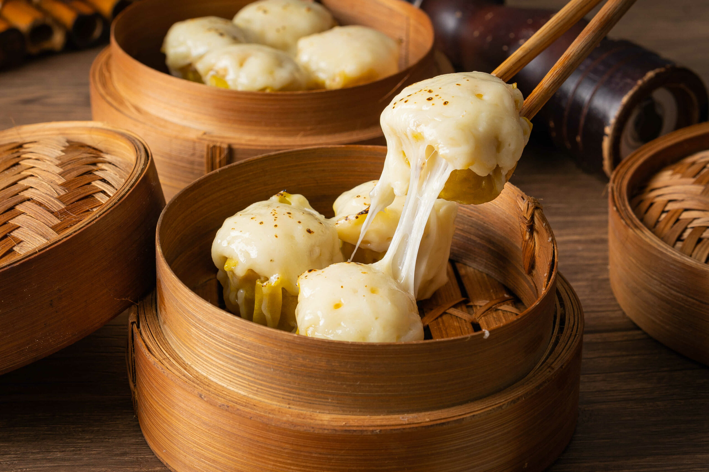

Dim Sum Recipe
Dim sum is a traditional Chinese meal made up of small plates of dumplings and other snack dishes and is usually accompanied by tea.
Ingredients:
- 3 dried shiitake mushrooms, soaked in boiling water, finely chopped
- 350g pork mince (ground pork), fatty
- 3/4 teaspoon salt
- 2.5 teaspoon sugar
- 1 teaspoon light soy sauce
- 1.5 tablespoon Chinese cooking wine (aka Shaoxing wine, sub Mirin or dry sherry)
- 150g prawns/shrimp, peeled and deveined, chopped 0.5cm
- 2 tablespoon white part of green onions, finely minced
- 20 - 25 wonton wrappers / egg wrappers 8cm squares or rounds
- 50g flying fish roe
Instructions:
- Combine in a large mixing bowl: 250g ground pork, 1/2 teaspoon salt, 1 tablespoon soy sauce, 1 tablespoon rice wine, and 1 teaspoon sugar. Mix vigorously until pasty.
- Add 5 finely chopped medium mushrooms, 100g finely chopped small prawns, and 2 finely chopped green onions. Mix until dispersed.
- Take a wonton wrapper and place it over the "O" formed by your forefinger and thumb. Push in 1 heaped teaspoon of filling. Use a butter knife to smear more filling until level with the edge of the wonton. Place on a work surface, push down to flatten the base, and shape into a round.
- Line a bamboo steamer with baking paper with holes in it.
- Fill a wok with about 2 cups of water and bring to a rapid simmer over medium-high heat.
- Place Siu Mai in the steamer (20 - 25 fits) and place the lid on. Put the steamer on the wok over the simmering water.
- Steam for 8 minutes, or until the internal temperature of the dumplings is 75°C/165°F.
- Remove steamer from wok, remove lid, and place a tiny bit of roe in the middle of each dumpling.
- Serve immediately with dipping sauce prepared by providing separate bowls of soy sauce, Chinese black vinegar or normal white vinegar, and Chinese chili paste or Sriracha. Let people mix their own dipping sauce to their taste. A common ratio is 3 parts soy sauce, 1 part vinegar, and chili paste according to preference.